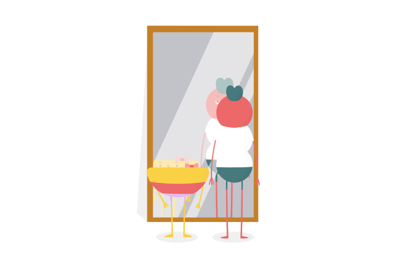

Nossa metodologia: Criar com ciência
Todo o conhecimento produzido pelo CanalBloom é desenvolvido sobre três pilares: Autoconhecimento, Vínculo e Orientação. Eles são a base do que chamamos de Criar com Ciência, uma metodologia que guia todos os nossos materiais.
Saiba mais sobre cada um desses pilares e entenda por que eles são fundamentais para uma vida familiar mais harmoniosa.
1
Autoconhecimento
O desenvolvimento socioemocional das crianças é influenciado pelas emoções da mãe e do pai. Por isso, quando tudo parece fora de controle, o primeiro passo para os adultos é lidar com as próprias emoções. Entender o que sentimos diante de um desafio e refletir sobre nosso comportamento – e a influência dele sobre nossos filhos – fazem parte do cuidado com a criança!